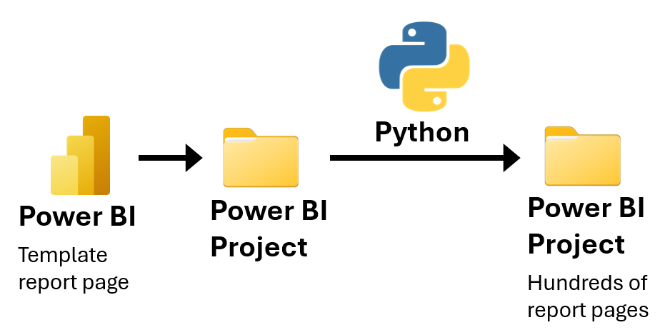
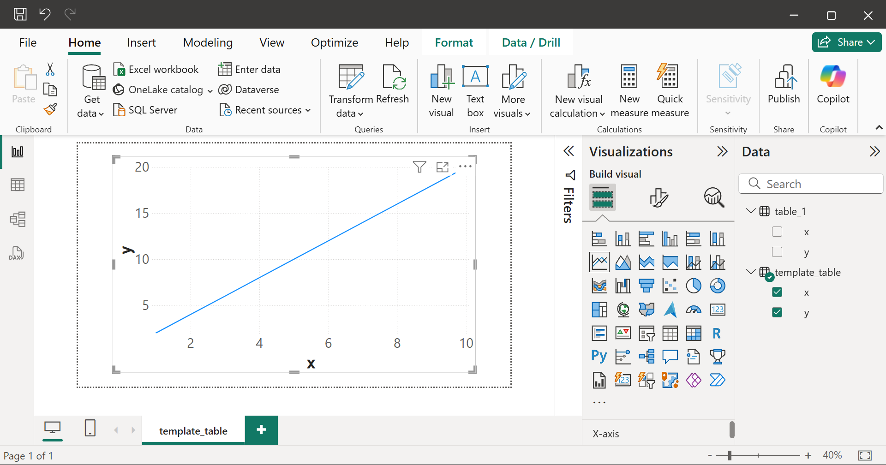
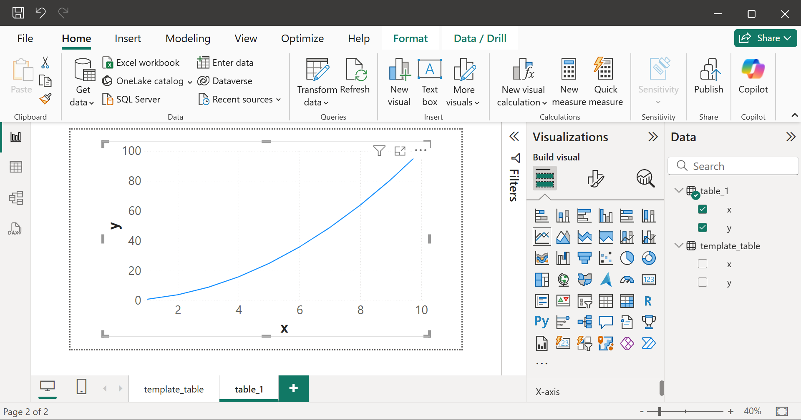

Creating Power BI report pages using Python
Summary

Problem: The analytics team needed to create hundreds of Power BI report pages, each presenting the data of a different database query.
Solution: I wrote a Python script to automate the creation of the Power BI report pages by editing the files in a Power BI Project folder.
Results: The Python script saved days of work for my team. Without the script, we would have had to manually create the report pages using the Power BI graphical user interface (GUI).
Power BI Projects (PBIP)
A Power BI Project (PBIP) defines a Power BI report using a folder of plain text files. By using PBIPs, we can edit Power BI reports using a programming language, such as Python.
.SemanticModel folder
Defines the data tables that are used to create the data visualizations in the report pages.
- Each
.tmdlfile in thetablesfolder defines a semantic model table. For example, the file contains the Power Query M code that produces the table.
.pbip file
A Power BI report such that changes made to the .Report and .SemanticModel folders will change the .pbip file. Furthermore, changes made to the .pbip file using the Power BI GUI will change the .Report and .SemanticModel folders.
I used the Power BI GUI to create a template_table report page, which presents the data from the template_table semantic model table. The template_table report page defines the appearance of the report pages that the Python script will create.

project.pbip
.Report folder
Defines all the report pages in the Power BI report.
📂definition
┣ 📂pages # (1)!
┃ ┣ 📂template_table
┃ ┃ ┣ 📂visuals
┃ ┃ ┃ ┗ 📂line_graph
┃ ┃ ┃ ┃ ┗ 📜visual.json # (2)!
┃ ┃ ┗ 📜page.json
- Each folder in the
pagesfolder defines a report page. - Each
visual.jsonfile defines a data visualization. For example, the file specifies the type of data visualization, and which semantic model tables to use to create the visualization.
Python code
I used the following Python packages:
-
pathlibto represent filesystem paths. -
shutilto copy files and folders. -
jsonto edit.jsonfiles. -
typingto add type hints.
1. Create variables.
project_path = Path(r"") # paste the path to the Power BI project folder
pages_path = project_path / ".Report" / "definition" / "pages"
new_table_name = "table_1"
new_page_name = new_table_name
2. Create a copy of the
template_table folder named table_1.
def copy_template_page(new_page_name: str) -> None:
template_page_path = pages_path / "template_table"
new_page_path = pages_path / new_page_name
shutil.copytree(template_page_path, new_page_path)
copy_template_page(new_page_name)
3. Edit page.json to change the name of the new report page from template_table to table_1.
def edit_page_json(new_page_name: str) -> None:
page_json = pages_path / new_page_name / "page.json"
with open(page_json, 'r') as f:
page_json_data = json.load(f)
page_json_data['name'] = new_page_name
page_json_data['displayName'] = new_page_name
with open(page_json, 'w') as f:
json.dump(page_json_data, f, indent=4)
edit_page_json(new_page_name)
4. Edit visual.json to change the semantic model table displayed in the line graph from template_table to table_1. I use a recursive function to assign i.value = "table_1" for all nested items i in visual.json such that i.key == "Entity".
def update_dict(dictionary, search_key: Hashable, new_value: Any) -> None:
for key, value in dictionary.items():
if key == search_key:
dictionary[key] = new_value
elif isinstance(value, dict):
update_dict(value, search_key, new_value)
elif isinstance(value, list):
for element in value:
if isinstance(element, dict):
update_dict(element, search_key, new_value)
def edit_visual_json(new_page_name: str, new_table_name: str) -> None:
visual_json = pages_path / new_page_name / "visuals" / "line_graph" / "visual.json"
with open(visual_json, 'r') as f:
visual_json_data = json.load(f)
update_dict(visual_json_data, "Entity", new_table_name)
with open(visual_json, 'w') as f:
json.dump(visual_json_data, f, indent=4)
edit_visual_json("new_page_name", "new_table_name")
New report pages
project.pbip

project.pbip